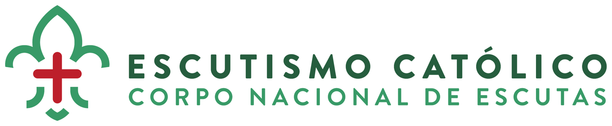
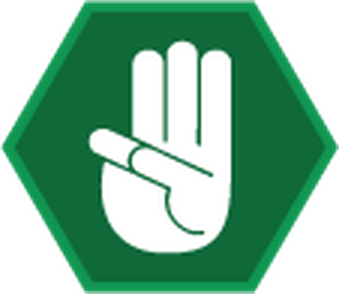
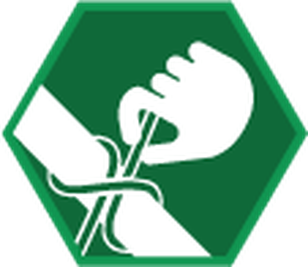
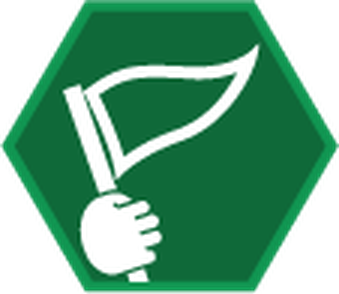
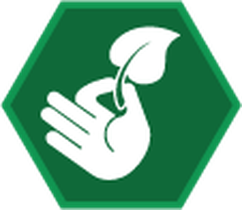
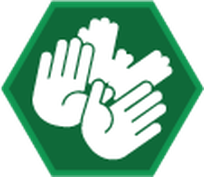
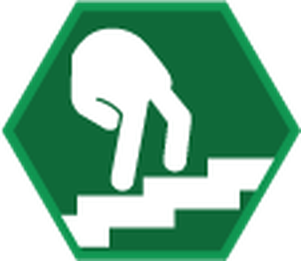
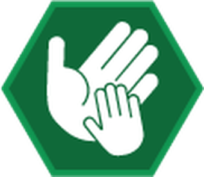
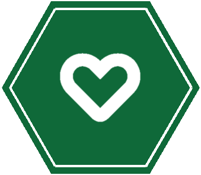

O que são os escuteiros
Aprender fazendo, desde 1907
O escutismo é um movimento de educação não formal, criado por Baden-Powell, que ajuda crianças e jovens a crescer em todas as dimensões: física, afetiva, intelectual, social, espiritual e de carácter.
Corpo Nacional de Escutas
Escutismo Católico Português
O CNE nasceu em Braga, a 27 de maio de 1923, e é o maior movimento de juventude do país: perto de 70 mil associados em mais de mil agrupamentos, de base paroquial, de norte a sul e nas ilhas. Faz parte do movimento escutista mundial e propõe uma educação integral à luz do Evangelho.
Cada escuteiro assume um compromisso pessoal — a Promessa — e procura viver a Lei do Escuta, em pequenos grupos onde todos têm um papel e onde as decisões se tomam em conjunto.

O método
As oito maravilhas do escutismo
Não é uma lista de atividades: é a maneira de as fazer. É isto que torna o escutismo diferente de qualquer outra atividade de tempos livres.

Lei e Promessa
Um compromisso pessoal, livre, com um modo de viver.

Aprender fazendo
Projetos pensados, feitos e avaliados pelos próprios.

Sistema de patrulhas
Pequenos grupos onde cada um tem lugar e responsabilidade.

Vida na natureza
A natureza como sala de aula e como casa comum.

Mística e simbologia
Um imaginário que dá sentido ao que se vive.

Sistema de progresso
Cada um avança ao seu ritmo, com desafios à sua medida.

Relação educativa
Jovens e adultos lado a lado, com confiança.

Envolvimento na comunidade
Servir quem está à volta — a paróquia, a cidade, o mundo.
Saber mais
Ligações úteis
Corpo Nacional de Escutas
O site oficial do CNE.
escutismo.pt↗Perguntas frequentes
Idades, inscrições, o que é preciso.
escutismo.pt↗A história do CNE
Desde Braga, em 1923.
escutismo.pt↗DMF
Depósito de Material e Fardamento — a loja oficial.
dmf.escutismo.pt↗Flor de Lis
As notícias do escutismo católico português.
flordelis.escutismo.pt↗Localizar um agrupamento
Os agrupamentos do CNE no mapa.
escutismo.pt↗